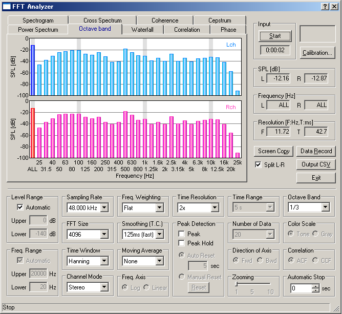

DSSF3 > RA > Reference Manual
FFT Analyzer
- Common setting items
- Measurement displays
- Microphone calibration
- Data record
Channel mode (previously, 1ch or 2ch) has been extended to Mono, Stereo, Left only, Right only, L-R difference.
FFT analyzer is a powerful tool for measuring sound in real time. Power spectrum, Octave band analysis, Waterfall display, Correlation meter (auto- and cross-), Phase meter, and Spectrogram can be used.
Note:
Measurement screen can be saved as a picture file by using the Windows screen copy function (Alt + PrtScr). We also recommend the image database software, MMLIB. This software works with all other Windows applications. Attached image of email or Fax is easily stored in the multimedia database.
WAVE file, CD
Signal generator's output can be saved by wav format in the hard disk or on CDs. Then, these files can be used as test signals instead of the signal generator.
Simultaneous operation
Signal generator, sound recorder, FFT analyzer, and oscilloscope works simultaneously, unless input / output device conflicts. Capability of this operation depends on PC's performance.
Microphone calibration
For the measurement of the absolute sound level, an input level sensitivity can be calibrated. The sound level meter or the acoustic calibrator can be used for the calibration. Microphone's frequency response can also be compensated on the RA's calibration window, if you have the data provided from the manufacturer. This compensation is useful if you are measuring the frequency response of the audio device, such as the amplifier and the loudspeaker.
Use the sound level meter as a microphone
AC-OUT of the sound level meter is the amplified sound itself. It is same as measuring with the microphone and microphone amplifier. RA turns your PC into the sound level meter equipped with the octave band analyzer, the peak hold function, and the TEF (time / energy / frequency) analyzer.

DSSF3 > RA > Reference Manual